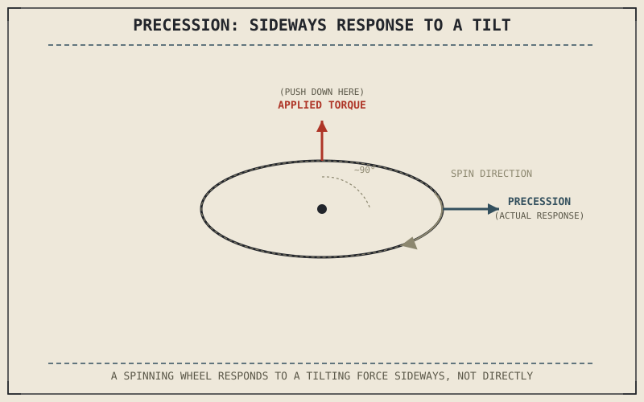

Chapter 4.6 already introduced precession — push on a spinning wheel's axle and it swings sideways rather than tipping the way you pushed it — and correctly warned against overselling it as the whole reason a motorcycle stays upright. What that chapter didn't have available yet was a way to put an actual number on how strong that sideways response is, or how it trades off against the wheel-mass decisions Part VI later covered in detail.
Chapter 8.8 closed by naming gyroscopic effects as this chapter's subject. This chapter gives Chapter 4.6's precession its quantitative form and connects it to what Parts VI and VII added afterward.
Putting a Number on Angular Momentum
Chapter 4.6 described a spinning wheel's angular momentum as resisting reorientation without quantifying it. Angular momentum is the product of a wheel's moment of inertia — a quantity set by how its mass is distributed relative to the axle, with mass concentrated near the rim contributing far more than mass near the hub — and its spin speed. Doubling spin speed doubles angular momentum directly; concentrating the same mass farther from the axle, the way a larger-diameter wheel or a heavier rim does, increases moment of inertia and therefore angular momentum even at the same spin speed. This is the quantity Chapter 4.6's qualitative "resists reorientation" was describing all along, now expressed in terms this book can actually connect to wheel design choices.
Precession Rate: How Fast the Sideways Response Happens
Chapter 4.6 established that a torque applied to a spinning wheel's axle produces a sideways response rather than a direct tilt. The rate of that sideways response — how quickly the axle actually sweeps — is the applied torque divided by the angular momentum this chapter just quantified. A wheel with more angular momentum precesses more slowly for the same applied torque, which is the quantitative reason a heavier or faster-spinning wheel feels more resistant to being steered or leaned: it isn't resisting the torque itself, it's converting that torque into a slower sideways sweep than a lighter or slower wheel would.
Chapter 4.6 established that a spinning wheel responds to a tilting torque sideways rather than directly. This chapter adds the missing number: that sideways response is slower for a wheel with more angular momentum, which is exactly why a heavier or faster-spinning wheel feels more resistant to steering input.

A spinning wheel shown with an applied torque arrow pointing one direction and the resulting precession response arrow pointing roughly ninety degrees away, illustrating why a tilting force on a spinning wheel produces a sideways rather than direct response.
Why Wheel Design Choices Affect Gyroscopic Feel
Because angular momentum scales with both mass and spin speed, the wheel construction choices Chapter 6.8 covered — cast versus spoked, rim width, wheel diameter — directly set how strongly a motorcycle exhibits the gyroscopic effects Chapter 4.6 introduced. Chapter 6.8 already flagged wheel mass as a genuine trade-off against unsprung mass and suspension performance; this chapter adds gyroscopic feel as a second, separate factor riding on that same wheel-mass decision, one Chapter 6.8 couldn't yet mention because the gyroscopic vocabulary to describe it hadn't been introduced.
A Common Misconception, Cleared Up Early
It's tempting to assume that once a wheel locks under hard braking, its gyroscopic contribution simply weakens along with everything else going wrong. A locked wheel's angular momentum doesn't weaken — it drops to essentially zero almost immediately, since angular momentum depends on spin speed and a locked wheel has stopped spinning entirely, whatever its road speed. This is a second, distinct reason, beyond the tyre-grip explanation Chapter 7.7 already gave, that a locked front wheel costs a motorcycle so much of its stability at once: ABS isn't only protecting the tyre's static friction from Chapter 8.2, it's also protecting the front wheel's angular momentum, and the gyroscopic contribution to stability that angular momentum was providing, from disappearing entirely.
Where This Leads
Angular momentum and precession explain the basic mechanism; the next chapter applies that mechanism directly to how gyroscopic effects change with speed and contribute to a motorcycle's overall stability. Chapter 8.10 turns to that application.
Key Concepts to Remember
- Angular momentum is moment of inertia multiplied by spin speed, giving Chapter 4.6's qualitative "resists reorientation" an actual quantity to work with.
- Precession rate equals applied torque divided by angular momentum, which is why a heavier or faster-spinning wheel precesses more slowly and feels more resistant to steering.
- A locked wheel's angular momentum drops to essentially zero, removing its gyroscopic contribution to stability entirely, a second reason ABS matters beyond preserving tyre grip.
Cross-References
| ← Ch. 4.6 | Introduced precession and angular momentum qualitatively; this chapter gives both a quantitative form. |
| ← Ch. 6.8 | Discussed unsprung mass and wheel construction; this chapter adds gyroscopic feel as a second factor riding on that same wheel-mass decision. |
| ← Ch. 7.7 | Explained ABS preventing wheel lock to preserve tyre grip; this chapter identifies a second reason, the loss of gyroscopic angular momentum, that lockup costs stability. |
| → Ch. 8.10 | Applies gyroscopic effects to speed-dependent stability, building directly on the mechanism this chapter established. |